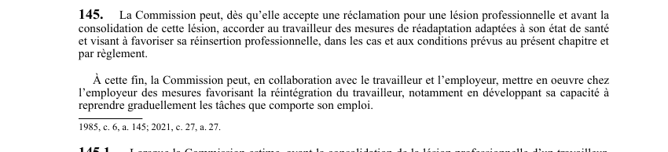

art-145-LATMP : droit réadaptation
Un article du wiki ⚖️ Recueil législatif
En bref
La Commission peut, dés qu'elle accepte une réclamation pour une lésion professionnelle et avant la consolidation de cette lésion.
- Accorder au travailleur des mesures de réadaptation adaptées a son état de santé.
🌐 LegisQuébec · 📄 PDF officiel (page 39)
Texte officiel : capture du PDF
{kind=link}

Toucher l'image pour l'agrandir🔗 Ouvrir a cette page : LATMP.pdf : page 39 · texte a jour au 20 février 2024
Voir aussi
- 🔢 Sous-article : art. 145.1 · réadaptation.
- 🔢 Sous-article : art. 145.2 · obligation : avant d'accorder ou de mettre en œuvre une mesure de réadaptation, la CNESST doit la soumettre au professionnel de la santé qui a charge du travailleur, sauf si la mesure n'a aucun effet sur son état de santé.
- 🔢 Sous-article : art. 145.3 · faculté : les mesures de réadaptation prennent fin à la première de ces dates : consolidation de la lésion, réalisation des mesures, ou décision de la CNESST qu'elles ne sont plus nécessaires.
- 🔢 Sous-article : art. 145.4 · obligation : lorsque l'employeur procède a une assignation temporaire durant la réalisation de mesures de réadaptation prévues a la présente section, seules celles qui compromettent cette assignation doivent étre interrompues.
- 🔢 Sous-article : art. 145.5 · faculté : lorsque la Commission met en oeuvre des mesures en vertu du deuxième alinéa de article 145, l'employeur peut choisir, conformément aux régles établies par réglement, l'une des options prévues au deuxième alinéa de l'article 180.
- 🔧 Modifié par : LMRSST art. 27 (remplacé) · remplace un intitulé de la LATMP.
- ↑ Loi : LATMP
Pages qui pointent ici (11)
- art-145.2-LATMP : approbation médicale des mesures de réadaptation Recueil législatif
- art-145.5-LATMP : réadaptation Recueil législatif
- art-154-LATMP : frais de déménagement du domicile Recueil législatif
- art-2-LATMP : définitions de la loi Recueil législatif
- Capacités résiduelles Recueil législatif
- Démarche en cas de lésion Droit du travail
- Droit à la réadaptation Droit du travail
- Index par profil Recueil législatif
- LATMP : Chapitre V : Réadaptation Recueil législatif
- Mécanismes de prévention LMRSST en mine Droit du travail
- Programme de retour au travail et assignation temporaire Droit du travail